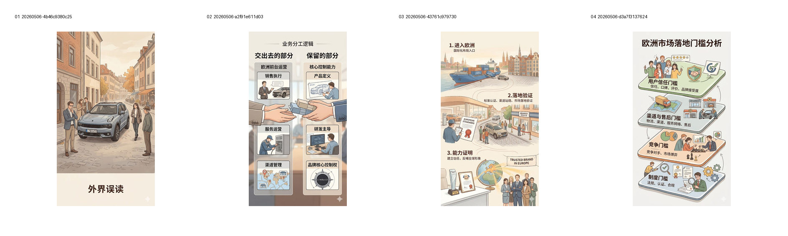
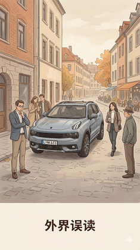

G21 · 后期第二层美观参考：暖色叙事结构 editorial
提取暖色叙事结构 editorial 的共同第二层美观特征。
Evidence: references/text2pic/conversations/20260506-图片风格总结分析/IMAGE_MANIFEST.md § G21 后期第二层美观参考组：暖色叙事结构 editorial

Images

ad857f16eee35c1e…
a07a3eb1dae38f12…
b72439e275c1bd70…
7646497f7724ddcb…